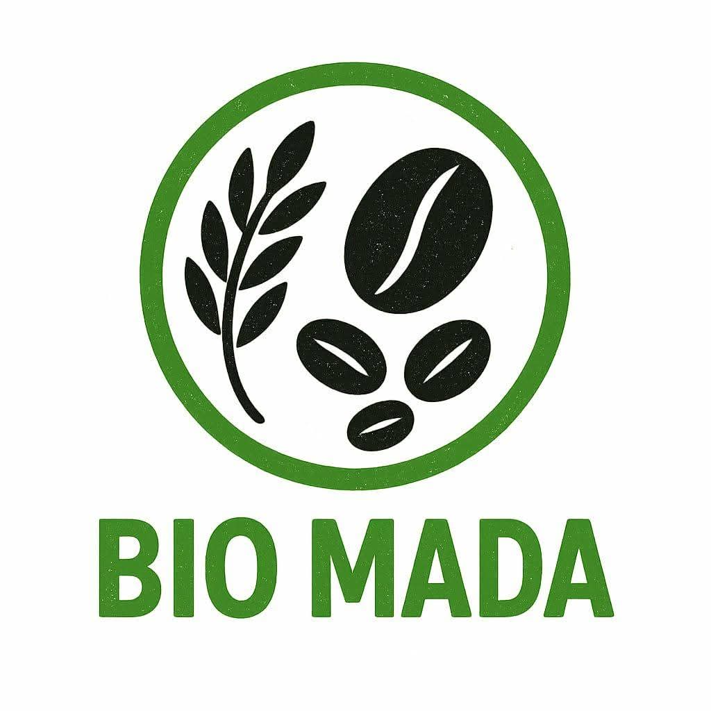

BIO MADA
Du terroir à l’assiette santé • Solutions santé dans l’assiette
est une initiative dédiée à la valorisation et la commercialisation de produits naturels et locaux de Madagascar, avec une approche intégrée.
Avec BIO MADA Sakafo, notre mission est d’apporter des solutions alimentaires saines, équilibrées et adaptées aux besoins modernes, tout en valorisant le savoir-faire malgache.
BIO MADA Sakafo
Cuisine naturelle • Plats sains• Qualité premium Made in Madagascar
Nous croyons que la santé commence dans l’assiette : nos produits et nos plats sont pensés pour offrir des repas équilibrés, rassasiants et savoureux.
BIO MADA & BIO MADA Sakafo
Deux volets complémentaires, une même exigence : qualité, naturel et savoir-faire Made in Madagascar.

Producteurs & fournisseurs de produits locaux
BIO MADA valorise les richesses de Madagascar : nous sélectionnons, produisons et fournissons des produits naturels et locaux, avec un positionnement qualité et une traçabilité claire.


La déclinaison cuisine & créations alimentaires
BIO MADA Sakafo est dérivé de BIO MADA : nous transformons les produits BIO MADA en plats (recettes, créations) pensés pour une alimentation saine, gourmande et premium.


La fondatrice
Une vision, une mission, une passion pour une alimentation saine.

Fondatrice BIO MADA - Malalaniaina Z. ANDRIANARIVO
De la terre à l’assiette. Depuis 1997, un parcours enraciné dans l’agriculture, la restauration et le service traiteur. En 2025 naît BIO MADA Sakafo, initiative malgache engagée pour une nourriture saine, locale et durable, au service de la santé, du bien-être et des événements de qualité à Madagascar.